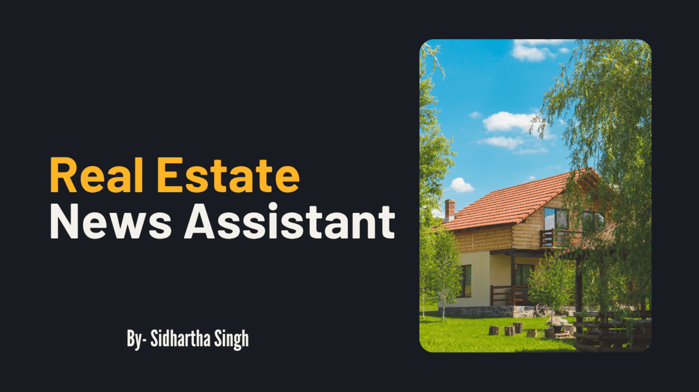

Real Estate News Assistant
Real Estate News Assistant using RAG, Real Estate Intelligence: Fast, Accurate, and Cited Summaries from News Articles
Overview & Problem Solved
The Real Estate Web App was built to simplify the process of discovering and browsing real estate listings for buyers, renters, and property investors. Traditional real estate platforms often feel cluttered and unintuitive. This app addresses that by offering a clean, minimal UI with responsive design and focused features.
The core goal was to make property browsing smooth, device-friendly, and easy to filter. It eliminates the noise of bloated listings pages by presenting categorized listings in an accessible format. The project acts as a foundational front-end solution for a larger real estate portal, aimed at enhancing user experience and discoverability.
Key Features
- Dynamic Property Listings: Users can view real estate cards with images, locations, and pricing, which are dynamically rendered based on available data.
- Responsive Design: The app adapts seamlessly to mobile, tablet, and desktop devices using Tailwind CSS for a consistent experience across screen sizes.
- Modular Component Structure: Reusable React components like PropertyCard, FilterBar, and Header make the codebase maintainable and easy to scale.
Technologies
Implementation
I designed and developed the entire front-end architecture of the Real Estate Web App using HTML, Tailwind CSS, and JavaScript. My responsibilities included creating a clean and responsive layout, integrating reusable UI components, and implementing card-based property listings. I also ensured the app adhered to accessibility and mobile responsiveness best practices.
The project follows a component-based design pattern. Each section (e.g., Header, Footer, Property Cards) was built as a modular block for maintainability and scalability. Tailwind CSS was chosen for its utility-first approach, which allowed rapid styling and consistency throughout the UI. I prioritized performance by optimizing image loading and reducing unnecessary DOM complexity.

Challenges & Solutions
A key challenge was making the layout look professional and visually balanced across different screen sizes. Tailwind provided utilities, but fine-tuning spacing and alignment required careful tweaking. To solve this, I utilized Tailwind’s responsive breakpoints and flexbox/grid combinations for better layout control.
Another challenge was ensuring image aspect ratios didn’t break the UI. I solved this using `object-fit: cover` and fixed aspect-ratio containers for thumbnails. Through this project, I learned a lot about structuring static websites for scalability, and about component reusability in design.
Outcomes & Impact
The project resulted in a visually clean and functionally robust real estate front-end that could be easily integrated with a backend or CMS. It fulfills its purpose of serving as a portfolio-ready, professional template for showcasing real estate listings.
This project demonstrates my ability to translate UI designs into responsive, scalable codebases and highlights my comfort with utility-first CSS frameworks, component-based structuring, and clean code practices. It's a strong reflection of my frontend development skills.
Implementation
I designed and developed the entire front-end architecture of the Real Estate Web App using HTML, Tailwind CSS, and JavaScript. My responsibilities included creating a clean and responsive layout, integrating reusable UI components, and implementing card-based property listings. I also ensured the app adhered to accessibility and mobile responsiveness best practices.
The project follows a component-based design pattern. Each section (e.g., Header, Footer, Property Cards) was built as a modular block for maintainability and scalability. Tailwind CSS was chosen for its utility-first approach, which allowed rapid styling and consistency throughout the UI. I prioritized performance by optimizing image loading and reducing unnecessary DOM complexity.
Challenges & Solutions
A key challenge was making the layout look professional and visually balanced across different screen sizes. Tailwind provided utilities, but fine-tuning spacing and alignment required careful tweaking. To solve this, I utilized Tailwind’s responsive breakpoints and flexbox/grid combinations for better layout control.
Another challenge was ensuring image aspect ratios didn’t break the UI. I solved this using `object-fit: cover` and fixed aspect-ratio containers for thumbnails. Through this project, I learned a lot about structuring static websites for scalability, and about component reusability in design.
Outcomes & Impact
The project resulted in a visually clean and functionally robust real estate front-end that could be easily integrated with a backend or CMS. It fulfills its purpose of serving as a portfolio-ready, professional template for showcasing real estate listings.
This project demonstrates my ability to translate UI designs into responsive, scalable codebases and highlights my comfort with utility-first CSS frameworks, component-based structuring, and clean code practices. It's a strong reflection of my frontend development skills.